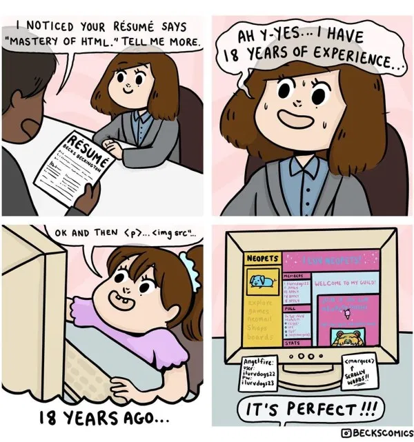
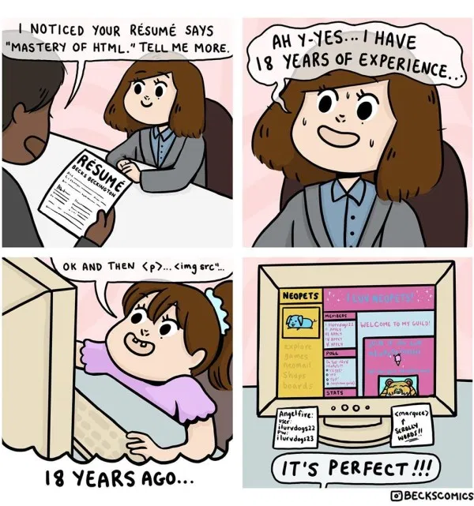
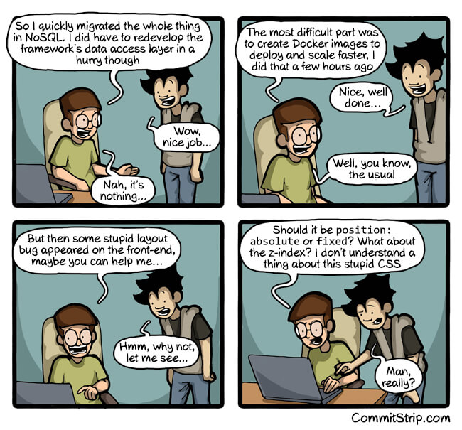

HTML
HTML = Hypertext Markup Language (Hypertext Auszeichnungssprache)
HTML ist eine textbasierte Auszeichnungssprache zur Strukturierung digitaler Dokumente wie Texte mit Hyperlinks.
HTML = Hypertext Markup Language (Hypertext Auszeichnungssprache)
HTML ist eine textbasierte Auszeichnungssprache zur Strukturierung digitaler Dokumente wie Texte mit Hyperlinks.
Die Abkürzung CSS bedeutet Cascading Style Sheets(gestufte Gestaltungsbögen)
CSS ist eine Stylesheet-Sprache für elektronische Dokumente und zusammen mit HTML und DOM eine der Kernsprachen des World Wide Webs
CSS wurde entworfen , um Darstellungsvorgaben weitgehend von den Inhalten zu trennen>
 Es gibt mehrere Arten von Listen
Es gibt mehrere Arten von Listen
Start!